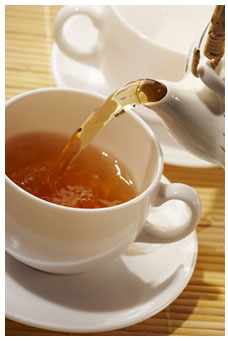

Rtanjski čaj ili Satureja montana pronađena je prvi put na planini Rtanj pa otuda i njeno ime. To je endemska biljka što znači da raste samo i jedino u ovom području. Ova biljka je usled nekontrolisane ali i nepravilne eksploatacije ugrožena pa je sada zakonom zaštićena u Srbji. Rtanjski čaj je lekovita biljka koja može da naraste do visine od oko jednog metra. Može živeti relativno dugo, čak nekoliko desetina godina. Stabljike su razgranate, pri dnu su odrvenele i puze po tlu. U gornjim delovima uspravnih stabljika razvijaju se cvetovi svetlo ljubičaste boje.
Biljke se najčešće beru za vreme cvetanja, obično u avgustu i septembru. Beru se cvetovi koji se skidaju sa stabljika ili se beru vrhovi stabljika zajedno sa cvetovima. Potom se cvetovi i stabljike suše nasenovitom prozračnom prostoru.
Koristi se od davnih vremena u narodnoj medicini za čitav niz bolesti i poznat je po svojim blagotvornim dejstvima. Odličan je protiv upala organa za disanje i varenje. Koristi se kod respiratornih infekcija, kašalj, bronhitis, astma, a takođe i kod upale mokraćnih kanala a spolja za ublažavanje upala kože i sluzokože.
U narodu je poznat i kao moćan afrodizijak. Travari u Srbiji smatraju da čaj od ove divne biljke ima svojstva opšteg tonika koji jača organizam i imunitet. Uz sve to ima izuzetnu i prepoznatljivu aromu pa se koristi i kao začin za jela sa mesom.

Rtanjski caj